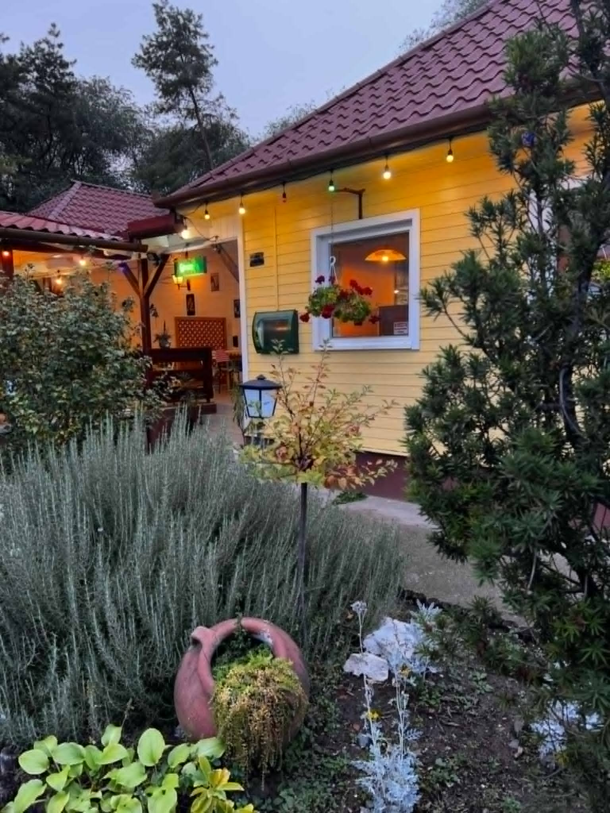
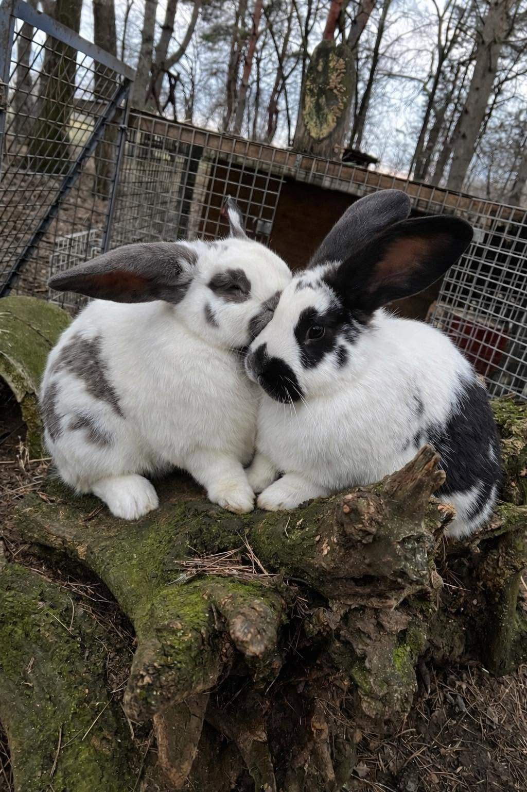
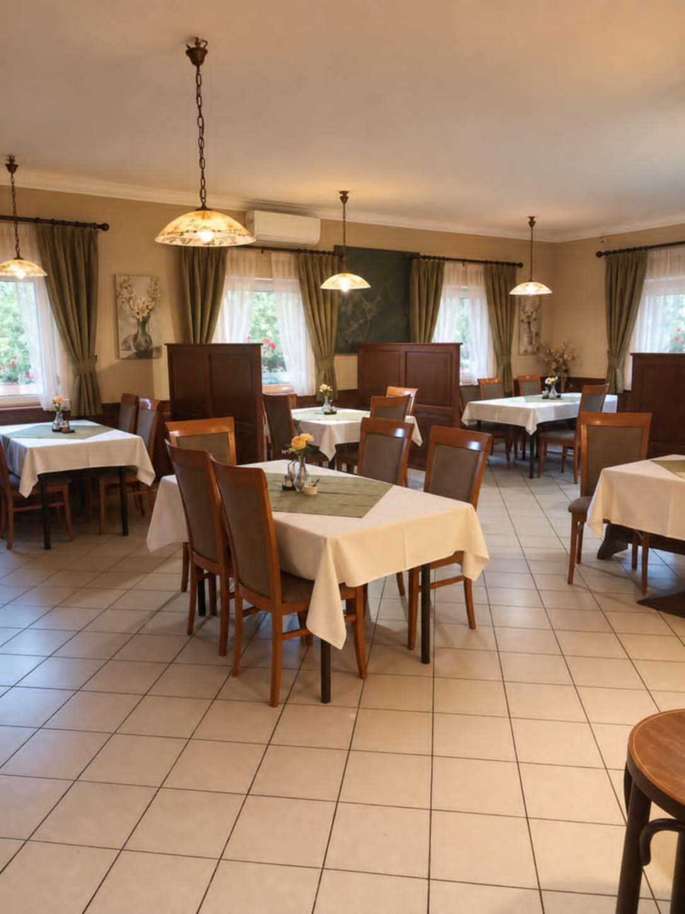

Cím és megközelítés
4-es főút, 2721 Pilis
ÚtvonaltervezésTermészetközeli vendégszeretet
Hagyományos vidéki hangulat, természetes színek és barátságos vendéglátás.
Szeretettel várjuk
Ezen az oldalon hamarosan megtalálhatók lesznek a vendéglő legfontosabb információi, az étlap, a nyitvatartás és az elérhetőségek. A végleges tartalmakat az étterem jóváhagyása után tesszük közzé.
Pillants be hozzánk
Vidéki környezet, barátságos vendéglő és finom falatok.



Hagyományos vendéglői stílus
Fenyőzöld, barna és törtfehér
Információk hamarosan
Különleges alkalmak
Családi eseményekre és csoportos étkezésekre vonatkozó érdeklődés esetén keressen minket!
ÉrdeklődésKeressen minket
Látogasson el hozzánk a 4-es főút mellett, Pilis és Monorierdő között!
4-es főút, 2721 Pilis
Útvonaltervezés
Hétfő–vasárnap
11:30–21:00
Minden nap várjuk vendégeinket!
Asztalfoglalás és érdeklődés:
Hívás indítása